脂肪经常被视为发胖的原因，也曾在低脂饮食风潮中被刻意回避。但从生物化学角度看，脂肪既是人体储能的主要形式，也是细胞膜、信号分子和脂溶性维生素吸收不可缺少的一部分。问题不在于要不要吃脂肪，而在于吃多少、吃哪一种，以及它进入人体以后如何被利用。
本文以视频《油脂的真相》的口播内容与截图为基础，提取分子结构、食用油和 Omega 脂肪酸三个主线，并结合营养指南及运动营养研究，补充消化吸收、脂肪动员及增肌减脂的实际应用。视频出处与补充资料见文末。
01｜脂肪究竟是什么？
我们日常所说的食用脂肪，主体是甘油三酯（Triglyceride，TG，也称三酰甘油，TAG）。其基本结构是一个甘油分子，通过三个酯键连接三个脂肪酸分子。
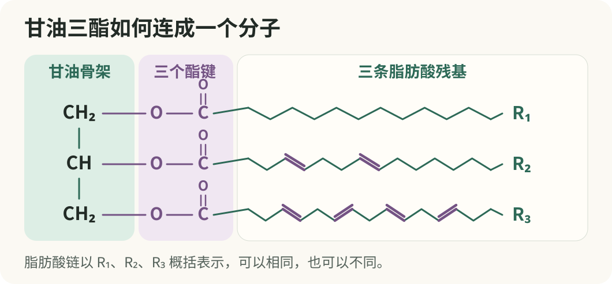
甘油（Glycerol）是含三个羟基的三碳醇，承担连接脂肪酸的作用；脂肪酸（Fatty acid）则由羧基与不同长度的碳氢链构成。三条脂肪酸不一定相同，因此同一个甘油三酯分子可以同时含饱和与不饱和脂肪酸。
脂肪酸碳链中含有较多可被氧化的碳氢键，脂肪的供能密度高：每克脂肪约提供 9 kcal，而每克碳水化合物或蛋白质约提供 4 kcal。脂肪组织还可以低含水量储存甘油三酯，因此很适合作为长期能量储备。
然而，脂质并不只有甘油三酯。磷脂是细胞膜的重要构成成分，胆固醇则是细胞膜成分及类固醇激素、胆汁酸等的合成原料。这三类物质不能混为一谈。
02｜为什么会有饱和、不饱和与反式脂肪酸？
脂肪酸的结构从哪里来？
饱和程度首先由脂肪酸合成与后续酶促修饰决定。动物可以利用乙酰辅酶 A 和丙二酰辅酶 A 合成棕榈酸，再通过延长酶增加碳链长度，通过去饱和酶引入特定位置的双键。例如 Δ9 去饱和酶（SCD）可将硬脂酸（18:0）转为油酸（18:1 n-9）。植物还具有可合成 LA、ALA 的去饱和酶体系。不同生物的酶表达、储能和膜脂需求不同，因而形成不同的脂肪酸谱。工业部分氢化也可改变双键数量或构型，但它和生物合成不是同一过程。[15]
饱和脂肪酸（SFA）：碳链中没有碳碳双键
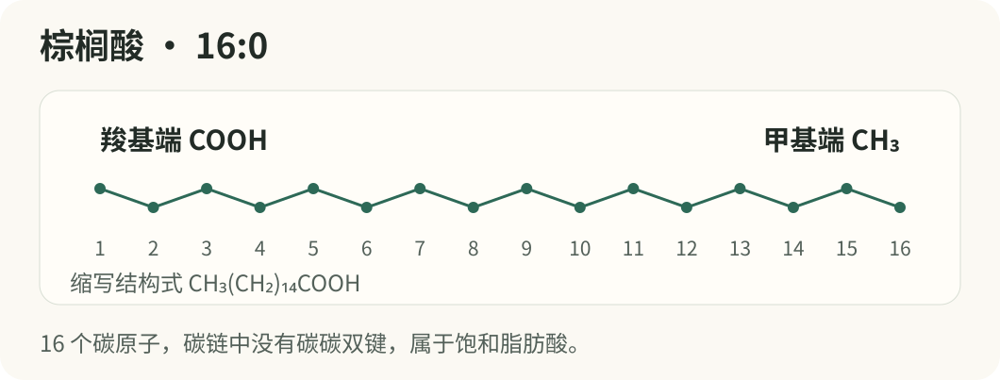
饱和指的是碳链上的碳碳键均为单键，其氢原子达到相应结构的最大饱和程度。碳链较容易排列紧密，通常熔点较高，因此富含长链饱和脂肪酸的油脂往往在室温呈固态或半固态。
棕榈酸、硬脂酸、月桂酸都是常见成员。它们可以供能、参与储能和膜脂合成；人体自身也能合成部分饱和脂肪酸，因此无需刻意通过饮食补足某个饱和脂肪酸目标。不同饱和脂肪酸对血脂的影响并不完全相同，但总体而言，以饱和脂肪替代不饱和脂肪容易升高 LDL 胆固醇。WHO 建议其提供的能量不超过总能量的 10%。[1]
不饱和脂肪酸（UFA）：碳链中有一个或多个双键
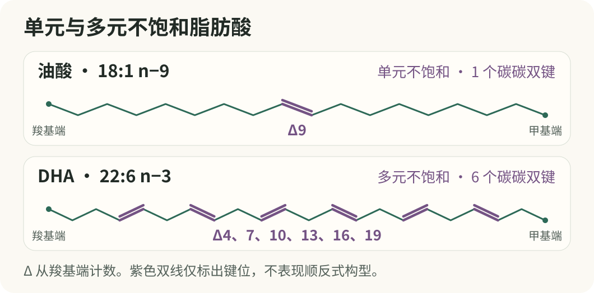
天然油脂中的不饱和脂肪酸通常含顺式双键。顺式结构让碳链产生弯折，降低紧密堆积的能力，所以富含这类脂肪酸的油通常更易保持液态。
单不饱和脂肪酸（MUFA）只有一个碳碳双键，例如橄榄油中的油酸（18:1，Omega-9）。多不饱和脂肪酸（PUFA）含两个或更多双键，例如亚油酸（18:2，Omega-6）、α-亚麻酸（18:3，Omega-3）以及 EPA、DHA。
它们既可供能，也参与调节膜流动性、细胞信号以及免疫反应。用顺式不饱和脂肪替换部分饱和脂肪，有助于改善 LDL 胆固醇水平。[1] 双键越多通常也越容易发生氧化，因此储存、温度和反复加热都值得关注。
反式脂肪酸（TFA）：有双键，但空间排列发生变化
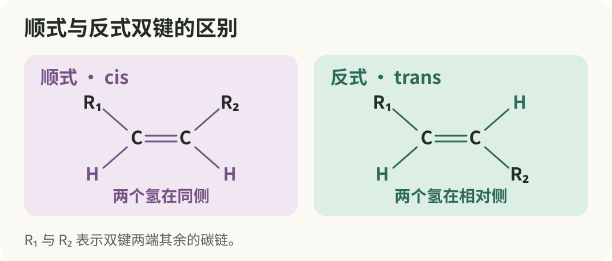
反式脂肪酸从化学分类上仍是不饱和脂肪酸，并不是第三种独立的饱和度类型。区别在于双键几何构型：顺式（cis）和反式（trans）。工业上曾通过部分氢化让液态油获得起酥性、较高熔点与稳定性，但过程中可能产生大量反式脂肪。完全氢化和部分氢化不能等同；牛羊等反刍动物的瘤胃微生物也能产生少量天然反式脂肪酸。
工业反式脂肪会升高 LDL、降低 HDL，并增加心血管风险，没有必须摄入的生理需求。正常烹调产生的反式脂肪通常远少于传统部分氢化油，但反复高温加热仍会增加氧化与其他降解产物。WHO 建议反式脂肪供能不超过 1%，并尽量避免工业来源。[1][2]
| 类别 | 结构特点 | 典型来源 | 日常原则 |
|---|---|---|---|
| SFA 饱和 | 无 C=C | 肥肉、黄油、椰子油、棕榈油 | 适量、设上限 |
| MUFA 单不饱和 | 1 个 C=C | 橄榄油、菜籽油、坚果 | 作为常用脂肪来源 |
| PUFA 多不饱和 | ≥2 个 C=C | 大豆油、亚麻籽、鱼类 | 保证必需脂肪酸与 Omega-3 |
| TFA 反式 | 至少有一个反式双键 | 部分氢化油、少量反刍动物脂肪 | 尽量少，避免工业来源 |
03｜植物油与动物油：差别不只在来源

从油脂利用的历史看，动物脂肪易于从脂肪组织中加热提取；植物油则常需从种子或果肉中压榨、提取及精炼。农业、食品加工技术与烹饪文化，共同推动了不同食用油的流行。视频对猪油、橄榄油、大豆油和菜籽油的历史叙述，为理解这一点提供了背景。[V]
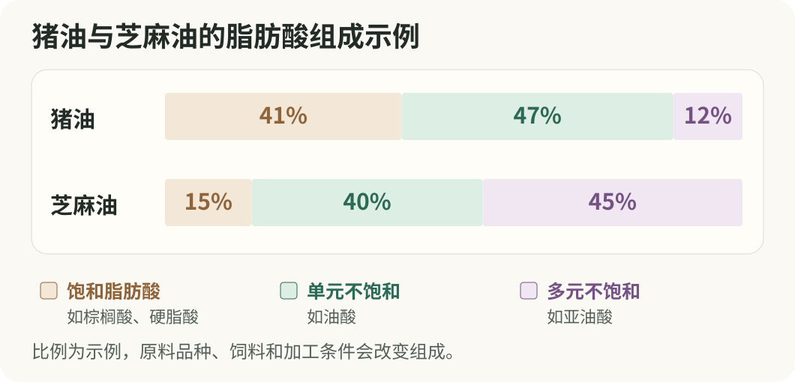
为什么动物脂肪与植物油的形态不同？
原稿把动物油脂的来源归为皮下与内脏周围脂肪组织，把植物油归为种子、果肉中的油体。进一步说，动物脂肪细胞将甘油三酯储存在脂滴内，作为能量储备；植物种子也用甘油三酯储能，但常以油体形式存在，外面有磷脂和油体蛋白（oleosin）等，帮助储存和萌发时动员。提取方式不同，但最终油脂的主体化学结构相同。[12]
视频中猪油的饱和、单不饱和、多不饱和比例分别为 41%、47%、12%；芝麻油分别为 15%、40%、45%。因此示例猪油的不饱和脂肪酸其实占 59%，芝麻油占 85%。猪油不是纯饱和脂肪，芝麻油也不是纯不饱和脂肪。猪油中的棕榈酸、硬脂酸比例较高，芝麻油中的亚油酸（LA）比例较高，使两者的结晶与流动性质不同。猪的饲料、脂肪部位以及芝麻品种、加工条件都会改变实际比例。Codex 芝麻油的油酸与亚油酸范围分别约为 35.9–42.3% 和 41.5–47.9%（占总脂肪酸）。[13]
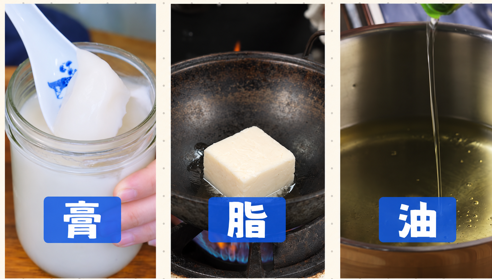
膏、脂、油：同一类分子为什么有三种外观？
从分子到宏观物态的关键是碳链结构 → 分子间作用与结晶 → 熔融范围 → 室温下固体脂肪比例。饱和链相对伸展，较容易靠拢形成晶体；顺式双键带来的弯折干扰规则排列。相同条件下，较长碳链通常具有较强的分子间色散作用，熔点也往往较高。反式链虽含双键，却比顺式链更容易排列。[14]
| 形态（约室温） | 微观原因 | 常见例子 |
|---|---|---|
| 膏：半固态 | 部分甘油三酯已经结晶，晶体网络包裹尚未凝固的液态油 | 猪油、部分鸡油 |
| 脂：较硬固态 | 固态脂肪比例较高，晶体结构较紧密 | 牛脂、羊脂 |
| 油：液态 | 多数甘油三酯处于熔融状态，难形成足够的晶体网络 | 芝麻油、菜籽油、橄榄油 |
真实油脂是大量不同甘油三酯的混合物，通常具有熔融范围而非单一熔点；还受三条脂肪酸在甘油上的排列、晶型、冷却速度和温度影响。加热猪油会变成液体，冷藏橄榄油可能出现结晶；椰子油和棕榈油是植物来源却可凝固，鱼油是动物来源却常为液态。因此不能用来源或常温物态直接判定营养价值。[14]
动物油与植物油的营养和烹饪价值
动物油的优势主要是风味、质地和烹调功能。猪油中也含有大量单不饱和脂肪酸；鱼油则富含长链 Omega-3。奶油、牛油和部分肥肉的饱和脂肪含量较高，不适合作为大量、长期的主要脂肪来源。全鱼、蛋、奶、肉还可提供蛋白质和其他营养素，但这不能直接归功于从中提取的油。
植物油通常以不饱和脂肪酸为主，有的还含维生素 E、植物甾醇及多酚等微量成分，但椰子油和棕榈油是饱和脂肪较多的例外。不同油的组成并不一致；精炼程度也会改变风味与微量成分含量。
| 油脂 | 典型脂肪酸特点 | 适用方式 |
|---|---|---|
| 橄榄油 | 油酸（Omega-9）丰富 | 凉拌、日常炒菜，避免冒烟 |
| 双低菜籽油（Canola） | 油酸为主，含 LA 和 ALA | 日常烹调的实用选择 |
| 大豆油 | LA 较多，也含一定 ALA | 日常烹调，搭配其他食物 |
| 普通葵花籽油、玉米油 | LA 较多，ALA 通常少 | 正常使用；无需因 Omega-6 而恐惧 |
| 亚麻籽油、紫苏籽油 | ALA 丰富、易氧化 | 凉拌或出锅后添加，按标签储存 |
| 猪油、黄油 | 饱和脂肪较多，具有独特质地 | 少量调味或烘焙 |
| 鱼油、部分藻油 | 可直接提供 EPA 和/或 DHA | 食物或补充剂来源，不作炒菜油 |
真正应关注的是整体脂肪酸构成、用量和替换关系。例如，把一部分猪油换成菜籽油是合理的选择；把猪油换成富含反式脂肪的旧式人造酥油则不是。把脂肪去掉却加入大量精制糖，也未必让饮食变得更健康。视频中关于低脂风潮的讨论具有启发性，但不能由历史趋势推断饱和脂肪无害，也不能把心血管疾病归结为某一种食用油。
04｜Omega-3、Omega-6、Omega-9 到底是什么？
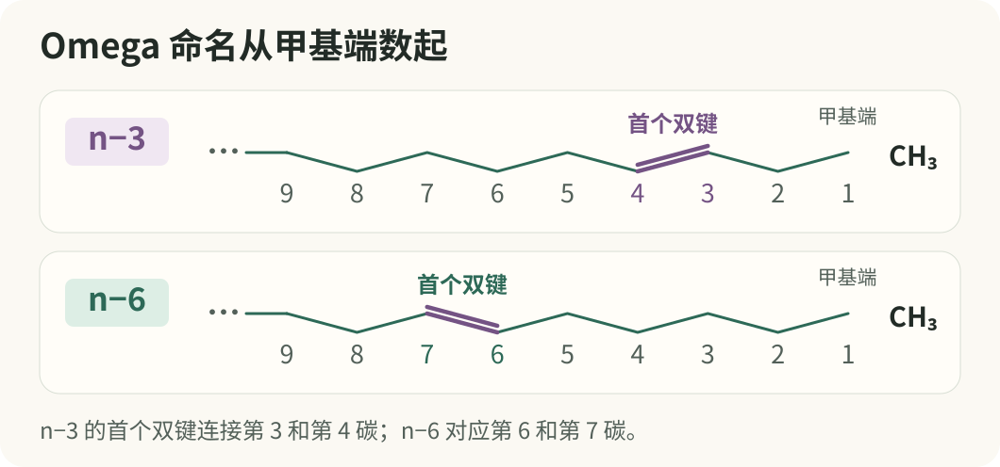
Omega（ω 或 n）表示从脂肪酸的甲基端（与羧基相反的一端）数起，第一个双键所处的位置。Omega-3 的第一个双键在第 3 与第 4 个碳之间；Omega-6 在第 6 与第 7 个碳之间，以此类推。这与脂肪酸是否饱和属于不同的描述维度。
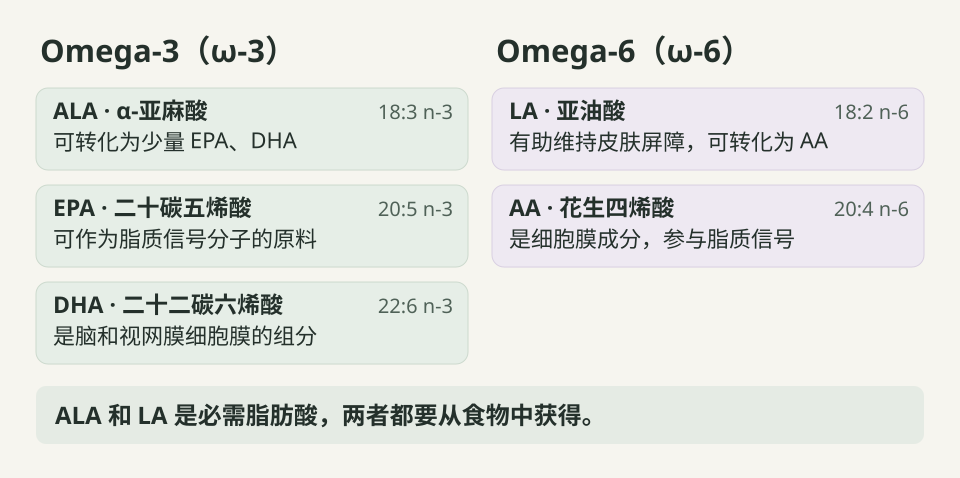
用标准记法表示，LA 为 18:2 n-6（Δ9,12），ALA 为 18:3 n-3（Δ9,12,15）。两者同样有 18 个碳，LA 有两个双键，ALA 多了一个靠近甲基端的双键。Δ 从羧基端计数，n/ω 从甲基端计数，因此对 ALA 来说，18−15＝3；对 LA 来说，18−12＝6。EPA（20:5 n-3）和 DHA（22:6 n-3）碳链更长，但距甲基端最近的双键仍在第 3 位。
为什么会出现两类？植物的 Δ12 去饱和酶可由油酸生成 LA，Δ15（ω-3）去饱和酶可由 LA 生成 ALA。不同植物的酶活性和品种会改变 LA、ALA 含量。人类没有这两种用于从头合成必需脂肪酸的酶，因此即使摄入大量油酸也不能自行制造足量 LA 或 ALA。两个家族不是脂肪的好坏等级，而是结构身份。[15]
| 家族 | 成员 | 主要作用与来源 |
|---|---|---|
| Omega-3 | ALA（18:3）α-亚麻酸 | 必需脂肪酸；亚麻籽、紫苏籽、核桃、菜籽油 |
| Omega-3 | EPA（20:5）二十碳五烯酸 | 参与脂质信号和炎症调节；富脂鱼、鱼油、部分藻油 |
| Omega-3 | DHA（22:6）二十二碳六烯酸 | 脑与视网膜膜脂的重要成分；富脂鱼、鱼油、藻油 |
| Omega-6 | LA（18:2）亚油酸 | 必需脂肪酸，参与皮肤屏障及膜脂功能；大豆油、坚果等 |
| Omega-6 | AA（20:4）花生四烯酸 | 参与免疫、血管和细胞信号；肉蛋及 LA 转化 |
| Omega-9 | 油酸（18:1） | 人体能够合成；橄榄油、菜籽油、坚果等 |
真正必须从膳食获得的是 ALA 和 LA，因为人类缺乏在相应位置引入双键的 Δ12、Δ15 去饱和酶。人体可以利用已获得的 ALA 和 LA 合成更长链的同家族脂肪酸，但不能把 Omega-6 直接变成 Omega-3，也不能靠普通饱和脂肪或油酸从头制造 ALA 和 LA。[3]
为什么两种必需脂肪酸都不可缺少？
LA 与 ALA 的作用不只是供能。LA 有助于维持表皮脂质屏障，缺乏必需脂肪酸可能造成皮肤鳞屑、生长异常等；LA 的代谢物 DGLA、AA 参与膜脂和脂质信号。ALA 则既是自身具有营养价值的脂肪酸，也是合成长链 n-3 的前体。DHA 在脑和视网膜膜脂中具有重要结构作用；EPA 与 AA 都可成为类二十烷酸等信号分子的原料，EPA 与 DHA 还参与炎症消退相关通路。AA 对正常生长、免疫及信号传导有作用，并非只有婴儿需要，也不是单纯的“坏脂肪”。[3][15]
需区分“必需脂肪酸”与“重要的长链脂肪酸”：健康成人的严格膳食必需前体为 LA 和 ALA；EPA、DHA 和 AA 虽有重要生理作用，但成人可由相应前体合成一定量。由于 DHA 合成效率有限，直接从鱼类或藻油获得长链 n-3 更可靠。婴幼儿、孕期等生命阶段的需求另有专门建议，不应套用成人的简单换算。
05｜为什么植物油不能完全替代鱼油？
准确说，植物油本身就可能含有 Omega-3 和 Omega-6，并非吃进去后才产生它们。问题在于普通陆生植物提供的 Omega-3 主要是 ALA，而不是 EPA 和 DHA。
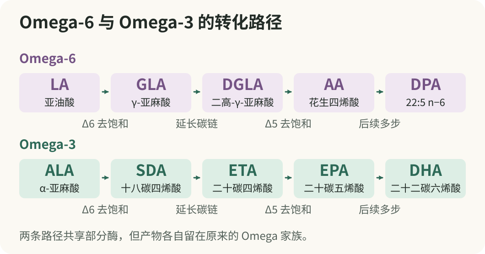
两条典型路线如下：
ALA 18:3 → FADS2（Δ6） → SDA 18:4 → 延长酶 → ETA 20:4 → FADS1（Δ5） → EPA 20:5 → 延长酶 → DPA 22:5 → 24:5 n-3 → FADS2（Δ6） → 24:6 n-3 → 过氧化物酶体一轮 β-氧化 → DHA 22:6。
LA 18:2 → FADS2（Δ6） → GLA 18:3 → 延长酶 → DGLA 20:3 → FADS1（Δ5） → AA 20:4 → 更长链 n-6 代谢物（包括 n-6 DPA）。
以上为主要的经典路线；部分酶具有其他活性。DHA 所示为经典 Sprecher 路线。两条路线中的 DPA 分别为 n-3 与 n-6，不是同一种结构。[15][16]
为什么会感觉人体总是先转化 Omega-6？
FADS2（Δ6 去饱和酶）和 FADS1（Δ5 去饱和酶）是由相应基因编码的酶蛋白，主要在内质网参与脂肪酸去饱和；延长酶（ELOVL 家族）从羧基端增加碳链长度。它们不是需要额外吃进去的补剂。由于许多饮食中 LA 摄入量明显大于 ALA，两种底物同时进入共享的酶促系统时，LA 的底物丰度可能影响 ALA 的转化机会。
但不是酶总是优先选择 Omega-6，更不是把 Omega-3 转成 Omega-6。 底物浓度、酶的亲和性、基因表达、激素和其他代谢需求共同决定通量。对于常见延长与去饱和路线，变化发生在羧基端附近，甲基端首个双键位置保留，因此 LA 一直属于 n-6，ALA 一直属于 n-3。Goyens 等的人体干预研究发现，LA、ALA 的绝对摄入量比单独的二者比值更能解释转化变化；不能凭油瓶上的比例推算一个人的 EPA 生成量。[17]
两条路线共享部分酶，因此存在底物竞争；但实际转化还受遗传、性别、激素、摄入量及其他代谢因素影响。ALA 还会被氧化供能或用于其他脂质合成，不会全部进入 EPA、DHA 路径。NIH 的营养资料指出，ALA 向长链 Omega-3 转化的报告效率通常较低（低于 15%），而 DHA 的生成尤其有限。[3] 视频给出的男性、女性固定转化率不宜当作所有人的换算公式。
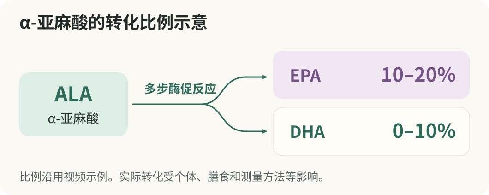
为什么 ALA 转化 EPA 较少，转化 DHA 更少？
首先，摄入 ALA 后并不是全部用于延长碳链。它可以用于供能、储存或构成膜脂。其次，要生成 EPA 必须经历多次去饱和与延长；要生成 DHA 又需从 EPA 继续延长至 22:5、24:5，进行额外去饱和并在过氧化物酶体缩短两碳。每一环节都存在代谢分流及酶活性限制，因此 DHA 的净生成通常更有限。[3][16]
| 研究或资料 | 观测结果 | 应如何理解 |
|---|---|---|
| Burdge & Wootton，2002，年轻女性 | 估算 EPA 21%、DPA 6%、DHA 9% | 使用标记 ALA 后追踪血浆脂肪酸；这是该研究的估算，不是所有女性的固定比例。[18] |
| Burdge 等，2002，年轻男性 | 检测到标记 EPA 和 DPA，21 天内未见明确标记 DHA | 提示该样本 DHA 净合成有限；不能推断所有男性转化率为零。[19] |
| NIH ODS 综述 | ALA 向长链 n-3 转化的报告值通常低于 15% | 整体提示转化有限，尤其是 DHA；不同实验方法和估算指标不宜直接对比。[3] |
性别与激素状态可能影响代谢能力，个体基因、膳食背景、年龄、测量时间和所分析的组织或脂质组分也会影响估算。图中的 10–20% 与 0–10% 可用于理解 EPA 与 DHA 转化难度的差别，但不能用它们直接乘以日常 ALA 克数来确定实际吸收的 EPA 或 DHA。举例说，吃 2 g ALA 不等于确定获得 200–400 mg EPA。更稳妥的方法是将 ALA 与直接摄入的 EPA+DHA 分开记录。
这并不意味着 Omega-6 是有害的。AA 可以产生某些促炎信号，也能参与炎症调节；EPA、DHA 可参与形成消退素等炎症消退介质。人体需要这些调控过程。随机试验的系统综述未发现增加 LA 摄入普遍升高所测炎症标志物；EFSA 也未设定固定的 Omega-6/Omega-3 最佳比例。[4][5] 因此，更可靠的做法是保证两种必需脂肪酸摄入，同时直接获得足够的 EPA、DHA，而不是盲目追求 1:1 或 4:1。
不同油脂的 Omega-3、Omega-6、Omega-9 含量
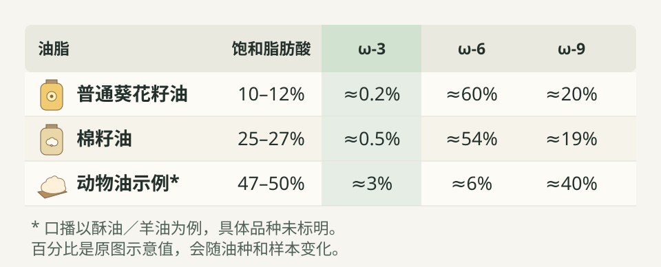
图中普通葵花籽油的 n-3 约 0.2%、n-6 约 60%；棉籽油分别约 0.5% 与 54%；末行的动物油示例约 3% 与 6%。这表明油脂间构成差异明显，但不能由某种油的 n-3 偏低就推断其一定有害。以下用 Codex 的植物油脂肪酸组成范围进一步说明。数据为总脂肪酸百分比，LA、ALA、油酸分别代表相应家族的常见成员；不是所有 n-6、n-3、n-9 的总量。[13]
| 植物油 | ALA（n-3） | LA（n-6） | 油酸为主的 C18:1（n-9） |
|---|---|---|---|
| 普通葵花籽油 | 未检出–0.3% | 48.3–74.0% | 14.0–39.4% |
| 高油酸葵花籽油 | 未检出–0.3% | 2.1–17% | 75–90.7% |
| 棉籽油 | 未检出–0.4% | 46.7–58.2% | 14.7–21.7% |
| 芝麻油 | 0.3–0.4% | 41.5–47.9% | 35.9–42.3% |
| 大豆油 | 4.5–11.0% | 48.0–59.0% | 17–30% |
| 低芥酸菜籽油 | 5.0–14.0% | 15.0–30.0% | 51.0–70.0% |
数据采用所链接 Codex 表格的范围，表示不同样品，不是单瓶油的保证值，各列端点不能相加。普通与高油酸葵花籽油的巨大差异也说明，仅看油品名称不能完整判断脂肪酸谱。图中的棉籽油 ALA 数值与标准范围略有差异，应以检测和产品实际成分为准。
为什么双低菜籽油（Canola）是实用的日常用油？
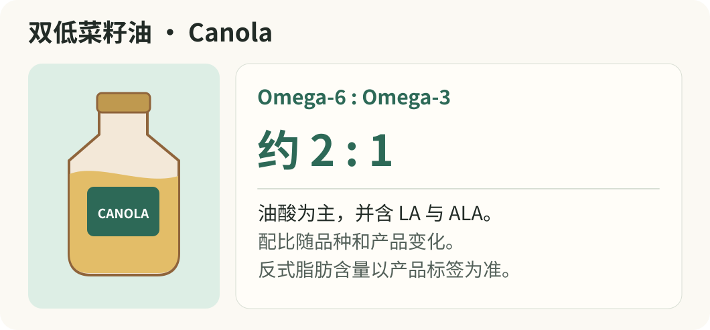
典型普通 Canola 油约含 7% 饱和脂肪、62% 单不饱和脂肪中的油酸（典型值）、19% LA 和 9% ALA，因此 LA:ALA 约为 2:1。它的优点是饱和脂肪相对少、富含油酸，同时提供两种必需脂肪酸，风味较中性，适合日常烹饪。Canola 是低芥酸菜籽油类型；相关 Codex 标准要求芥酸不超过总脂肪酸的 2%。双低育种还降低籽粕中的硫苷。高油酸或低亚麻酸品种会有不同构成。[13][20] [23]
2:1 并不意味着人体必须达到这个比例，也不能把菜籽油当作鱼油的等价来源。视频的“零反式脂肪”更适合理解为不依赖部分氢化、反式含量通常较低；精炼脱臭及高温处理可能产生微量反式异构体，标签为零也不一定意味着分析结果绝对为零。[2][21]
选一瓶健康的油，要看哪些指标？
| 评价维度 | 应关注什么 | 实际选择 |
|---|---|---|
| 脂肪酸谱 | 饱和脂肪、顺式 MUFA/PUFA、LA、ALA 的含量 | 以不饱和脂肪替代部分饱和脂肪；ALA 不足时增加菜籽油、核桃等来源 |
| 反式脂肪 | 营养标签、部分氢化油成分 | 尽量避开工业反式脂肪来源；不把“零”视为绝对无痕量 |
| 氧化稳定性与用途 | 不饱和程度、抗氧化物、游离脂肪酸、烟点与加热时间 | 日常炒菜选合适的菜籽油、橄榄油等；富 ALA 油凉拌；避免反复油炸 |
| 新鲜度与理化品质 | 酸价（游离脂肪酸/水解指标）、过氧化值（初期氧化）、对茴香胺值（二级氧化）、总极性组分（煎炸劣化） | 检测指标并非越低就能单独证明健康；购买合规产品、避光密封并遵循保存说明 |
| 微量成分 | 生育酚、植物甾醇、多酚等；加工会影响含量 | 依实际油品和用途判断；冷榨不是绝对优于精炼 |
| 全天膳食结构 | 总脂肪克数、总能量、EPA/DHA 来源和替代了什么食品 | 健康油也有约 9 kcal/g；不因油的名声增加摄入量 |
烟点表示油开始明显冒烟的温度，与游离脂肪酸及加工状况有关；它不等同于氧化稳定性，更不是健康等级。油在未冒烟前也可能发生氧化。反复加热、长时间高温及空气接触会累积降解产物；出现明显哈喇味、异常起泡或变黏时不要继续使用。[21][22]
实际结论：用双低菜籽油或橄榄油作为日常主力，按烹饪需求选择其他油脂，同时通过坚果、鱼类等补足不同脂肪酸，比寻找一种所谓“完美黄金比例油”更合理。
EPA 和 DHA 对健身有什么意义？
EPA 和 DHA 可改变膜脂组成并参与炎症反应及消退过程。运动营养研究提示，补充长链 Omega-3 可能减轻部分训练后延迟性肌肉酸痛，并对某些肌肉功能恢复指标有益，但结果并不一致，不能保证促进增肌或明显提高力量。[6] 正常训练后的炎症信号本身也是适应过程的一部分，并非越低越好。
EFSA 对健康成人提出 EPA+DHA 合计 250 mg/日的适宜摄入参考值；它不是专为运动恢复设定的治疗剂量。[5] 中国居民膳食指南建议每周最好吃鱼 2 次或 300–500 g，优先选择适合的富脂鱼类，例如鲑鱼、沙丁鱼、鲭鱼。不能常吃鱼时，可考虑鱼油或藻油；阅读标签时应看 EPA 与 DHA 的实际合计量，而不是胶囊所含鱼油总重量。[3][7] 正在使用抗凝药、有出血风险或考虑高剂量补充时，应先咨询专业人员。
06｜脂肪吃进身体以后，究竟去了哪里？
第一阶段：消化、吸收与运输
膳食甘油三酯 → 胆汁乳化 → 胰脂肪酶水解 → 脂肪酸 + 2-单酰甘油 → 混合胶束 → 小肠上皮细胞 → 重新合成甘油三酯 → 乳糜微粒 → 淋巴 → 血液 → 肌肉、脂肪组织及肝脏。
胆汁帮助油脂分散，胰脂肪酶主要切断甘油三酯的两个酯键。多数长链脂肪酸在肠细胞内重新酯化并装入乳糜微粒；短链及部分中链脂肪酸则可更直接进入门静脉。循环中的脂蛋白脂肪酶（LPL）释放脂肪酸，使其能够被肌肉或脂肪组织利用，乳糜微粒残粒由肝脏清除。[8]
第二阶段：储存，还是供能？
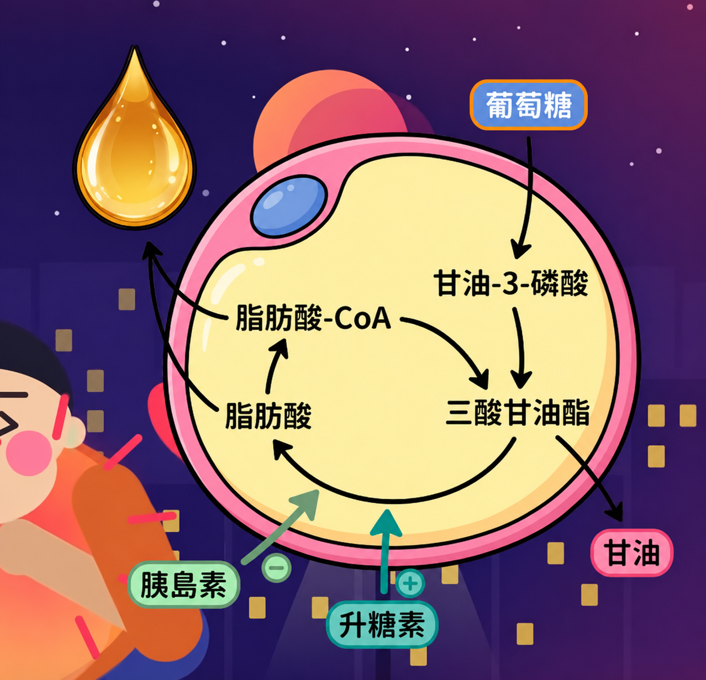
进食后，胰岛素等信号有利于脂肪储存：脂肪酸与甘油-3-磷酸重新合成甘油三酯，储存在脂滴中。禁食、运动等情况下，胰岛素下降或儿茶酚胺信号增强可促进脂解。脂肪细胞中的 ATGL、HSL、MGL 依次水解甘油三酯、二酰甘油和单酰甘油，最终释放脂肪酸与甘油。[9]
释放后的两类物质分别走向不同路径：
- 脂肪酸： 经白蛋白运输至组织，活化为脂酰-CoA；多数长链脂肪酸借助肉碱穿梭进入线粒体，经 β-氧化产生乙酰辅酶 A、NADH、FADH₂，进一步生成 ATP。长时间禁食等情况下，肝脏还可利用乙酰辅酶 A 生成酮体。
- 甘油： 主要在肝脏等组织经甘油激酶转化为甘油-3-磷酸，再转为磷酸二羟丙酮（DHAP），参与糖酵解、糖异生或脂质重新合成。
多数偶数碳脂肪酸不能净转化为葡萄糖，因为它们产生的乙酰辅酶 A 无法在人类体内实现葡萄糖的净合成；甘油部分却可以进入糖异生。这正是脂肪酸和甘油代谢上的一个关键区别。
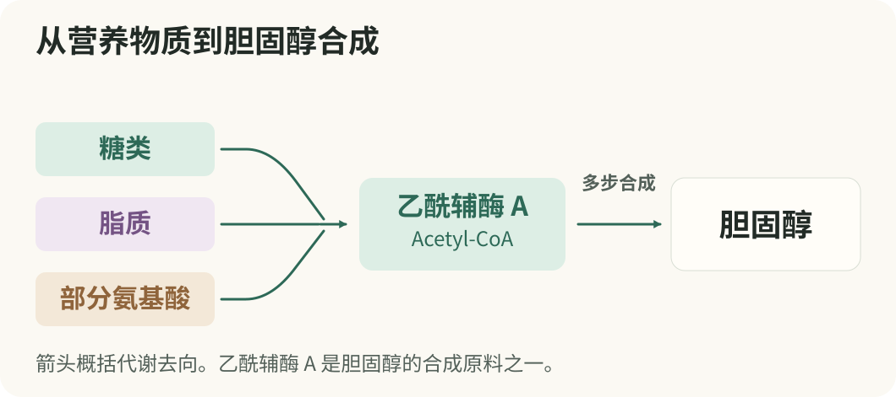
脂肪并非只能储存或燃烧，还可被用于合成膜脂、脂质信号分子等。过剩碳水也能通过脂质新生生成脂肪酸，但长期体脂变化取决于脂肪储存和动员、氧化之间的净平衡，而不是某一种食物是否触发胰岛素或一次训练时燃烧了多少脂肪。
07｜日常饮食、增肌期与减脂期怎么安排脂肪？
以下为一般成人及抗阻训练人群的实践框架，并非个人医疗处方。首先区分总脂肪和烹调油：食物自带的脂肪、炒菜油、酱料和补充剂都属于总脂肪预算。
日常维持：先确保质量，再控制总量
中国居民膳食指南建议成年人每天烹调油 25–30 g，并控制油炸食品摄入。[7] 这不是全天脂肪只能吃 25–30 g。例如，当天用油 25 g，再从鸡蛋、肉、坚果及奶制品获得 35 g 脂肪，总量便是约 60 g。
一般抗阻训练人群可把全天脂肪供能比例的 20%–30% 作为实用起点，再根据整体热量、训练表现和饮食偏好调整；这属于本文根据公共营养及运动营养资料提出的操作范围，不是硬性生理阈值。[1][10][11] 饱和脂肪供能不超过 10%，工业反式脂肪尽量避免。以 2,400 kcal 为例，20%–30% 的总脂肪约为 53–80 g，饱和脂肪上限约 27 g；上限不是推荐吃满的目标。
增肌期：脂肪为热量和正常生理功能服务
以小幅热量盈余为起点，优先保证足量蛋白质和能够支撑力量训练的碳水，再给脂肪预留合理预算。脂肪具有高能量密度，适合食欲不足时增加热量，但不需要为了提高睾酮而刻意大量摄入饱和脂肪。对于大重量低次数和高容量训练，碳水仍然是重要燃料；不能用高脂摄入取代必要的训练燃料。[10]
减脂期：减少过量脂肪，不等于戒掉脂肪
减脂依靠持续的能量赤字，同时维持抗阻训练和充足蛋白质，尽可能保留瘦体重。脂肪供能密度高，因此先减少额外油、油炸食品、奶油和高脂酱料，往往比一刀切删除所有脂肪来源更容易执行。仍应保留必需脂肪酸、适量鱼类与坚果，并为脂溶性维生素吸收保留条件。极端低脂的健美备赛方案不应直接作为普通健身者的长期模板。[11]
| 场景（仅示例） | 日总热量 | 脂肪供能比例 | 每日总脂肪 |
|---|---|---|---|
| 日常维持 | 2,400 kcal | 25% | 约 67 g |
| 增肌 | 2,800 kcal | 25% | 约 78 g |
| 减脂 | 2,000 kcal | 25% | 约 56 g |
计算公式：每日脂肪（g）＝每日目标热量（kcal）× 脂肪供能比例 ÷ 9。 示例用同一比例展示热量变化如何影响脂肪克数，并非建议所有人使用这些热量；实际应由维持热量、体重趋势、训练量及体成分目标决定。
甘油需要单独补充吗？
不需要为了合成甘油三酯而额外摄入游离甘油。人体能够通过糖代谢中间产物及甘油回收获得所需的甘油骨架。甘油类运动补剂有时用于特定补水策略，但不是普通抗阻训练增肌或减脂必需品，也不等于促进脂解。应把重点放在每日总脂肪、脂肪酸组成、蛋白质、碳水和整体热量上。
08｜把知识转化成一套可执行的饮食原则
- 主要烹调用油选择富含不饱和脂肪酸的油，如双低菜籽油、橄榄油或大豆油；按用途搭配，不必机械轮换或追逐某一种神奇油脂。
- 保持 ALA、LA 的食物来源，安排富脂鱼类，必要时用 EPA/DHA 补充剂弥补饮食缺口。
- 通过营养标签、厨房秤记录烹调油和食物内含脂肪；避免把“健康油”视作无限量食物。
- 避免长期大量摄入饱和脂肪、传统部分氢化油和反复高温油炸食品；油脂不要加热至持续冒烟。
- 增肌与减脂的脂肪安排服务于整体能量目标、训练质量及长期健康。鱼油的可能恢复作用不能替代睡眠、合理训练负荷和完整饮食。
结语：脂肪不是一个需要被排除的营养素，而是一组具有不同结构和代谢功能的分子。理解它的结构、摄入来源、消化运输、储存和动员，才能真正把油脂知识应用到训练和生活中。
参考资料与图片说明
- [V] 图一至图十五依据有祐 U_NoKnow 的油脂主题视频整理，口播涵盖脂肪酸、低脂饮食和菜籽油与鱼油。文中简称《油脂的真相》。分子图、比例表和路径图按原内容重绘，保留原画面的图做了局部清理。创作者主页。
- [1] WHO. Saturated fatty acid and trans-fatty acid intake for adults and children (2023).
- [2] WHO. Trans fat.
- [3] NIH Office of Dietary Supplements. Omega-3 Fatty Acids: Health Professional Fact Sheet.
- [4] Su H, et al. Dietary linoleic acid intake and blood inflammatory markers: systematic review and meta-analysis of randomized controlled trials (2017).
- [5] EFSA. Scientific Opinion on Dietary Reference Values for fats (2010).
- [6] ISSN. Position Stand: Long-Chain Omega-3 Polyunsaturated Fatty Acids (2025).
- [7] 中国营养学会. 《中国居民膳食指南（2022）》.
- [8] Endotext. Introduction to Lipids and Lipoproteins.
- [9] Endotext. Adipose Tissue: Physiology to Metabolic Dysfunction.
- [10] Iraki J, et al. Nutrition Recommendations for Bodybuilders in the Off-Season: A Narrative Review (2019).
- [11] Helms ER, et al. Evidence-based recommendations for natural bodybuilding contest preparation: nutrition and supplementation (2014).
- [12] 植物种子油体与油体蛋白综述（2022）
- [13] FAO/WHO Codex：命名植物油标准与脂肪酸组成表（在线汇编）
- [14] Crystallization modifiers in lipid systems（2015），油脂结晶、熔融与链结构
- [15] Fatty acid desaturases, PUFA regulation, and biotechnological advances（2016）
- [16] Long-chain omega-3 fatty acids and the brain（2015），含 DHA 合成路径
- [17] Goyens 等，LA 与 ALA 绝对摄入量及转化（2006）
- [18] Burdge & Wootton，年轻女性的 ALA 转化研究（2002）
- [19] Burdge 等，年轻男性的 ALA 转化研究（2002）
- [20] Oklahoma State University Extension：Canola Oil Properties
- [21] Vegetable Oils and Their Use for Frying: A Review of Their Compositional Differences and Degradation（2024）
- [22] AOCS：Enhancing oxidative stability and shelf life of frying oils with antioxidants
- [23] U.S. Canola Association：典型菜籽油脂肪酸组成（行业资料，用于示例）